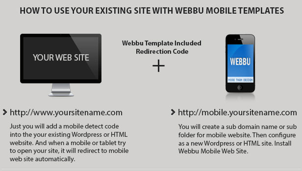

Metro Mobile Mobile Template
- Created: 17/11/2012
- By: Abdulkadir Atasoglu
- Email: kadir@webbu.com
This documentation was made only with the Documenter (except the images)
HTML Structure
Hi, Thank you for purchase my template. And please don't forgot to rate :) ( On your download page )
HTML structure is simple and FULL commented for you;
For home page;
.........
For sub pages;
.........
Tile Instruction
On this section i will tell you all about metro tiles. You will see a tile chart below picture. Let's first we check it then look at the sample codes below;

Tile Instruction: You will see lots of example below this line. I want to show you what does mean class code below;
The important think is if you want to create a tile must have class="tile" code. Another tags are COLOR, SIZE, TYPE this tags are listed below;
Tile Sizes; You can see all sizes picture up side.
Tile Type Code;
- iconmain (For use icon tile and image icon tile)
- image (For use image, map, video tiles)
- (for slider tile you have to put none of type)
Tile Color Code;
- TLightRed (color code = #E51400)
- TLightOrange (color code = #FE8300)
- TOrange (color code = #FD5C04)
- TRed (color code = #BD0000)
- TBrown (color code = #7D6058)
- TLightPurple (color code = #E86EB2)
- TDarkPurple (color code = #8D0196)
- TLightBlue (color code = #5FCDCB)
- TBlue (color code = #1673D2)
- TDarkBlue (color code = #0849B1)
- TFacebookBlue (color code = #3B5D9C)
- TTwitterBlue (color code = #59D5E6)
- TThumblrBlue (color code = #2A4866)
- TLinkedinBlue (color code = #1477AC)
- TDribbblePink (color code = #F26097)
- TTurquise (color code = #5FCDCB)
- TLightGrey (color code = #E0E0E0)
- TGrey (color code = #BBB)
- TDarkGrey (color code = #666)
- TLightGreen (color code = #74E800)
- TGreen (color code = #00A300)
- TDarkGreen (color code = #008A00)
- TBlack (color code = #000)
- TWhite (color code = #fff)
Tile div contain 2 main side; 1-) boxcontent 2-) tilename;
boxcontent You can use all this elements see code below;
tilename You can use all this elements see code below;
TypographyGallerySample Tiles
Sample 1: This is sample linked icon tile tile code; If want to link a tile have to your like code below. But you can use without link you will see on Sample 2(you can see on index.html)
TypographySample 2: This is sample unlinked icon tile tile code no link used; If want to link a tile have to your like code below.(you can see on index.html)
TypographySample 3: This is sample image tile code;(you can see on index.html)
 Gallery
GallerySample 4: This is sample image slider tile code;(you can see on index.html)
Sample 5: This is sample video (2 tile code inside youtube and vimeo) tile code;(you can see on index.html)
Sample 6: This is sample map tile code;(you can see on index.html)
Sample 7: This is sample image icon tile code;(you can see on index.html)
 Portfolio
PortfolioShortcodes & Typography
Metro Mobile is using Twitter Bootstrap 2.1 and you can find lot of typography examples on typography.html, tables.html, elements.html, icons.html, dividers.html, columns.html, columns-desktop.html ( for desktop size columns) section. And you can see code samples on this pages.
Cusromize & Styles
Metro Mobile's main style is the css > styles.css If you want to use white background just change code below on style.css;
/* Import for other style sheets */ @import url(bootstrap-dark.css); /* For Dark Backgorund */ /*@import url(bootstrap-white.css); */ /* For Light Backgorund */ @import url(tiles.css); /* Tile settings */ @import url(style.css); /* Styles */ @import url(font-awesome.css); /* Font Awesome */ /* Import Finish */For customize font and sizes in style.css change code below;
/*-------------------------------------------------- GENERAL LAYOUT - Change "font-family:'Open Sans',sans-serif;" tags and write your owns. There is 5 tags need to change. This tags will change entire site fonts. ---------------------------------------------------*/ body{margin:0px; font-size:12px; font-family: "Segoe UI", "Segoe WP", "RobotoRegular", sans-serif; line-height:20px; font-smooth:always} a{font-family:"Segoe UI", "Segoe WP", 'RobotoRegular', sans-serif; font-size:12px; font-smooth:always} p{font-size:12px; font-family:"Segoe UI", "Segoe WP", 'RobotoRegular', sans-serif; font-smooth:always} h1, h2, h3, h4, h5, h6{font-family:"Segoe UI", "Segoe WP", 'RobotoRegular', sans-serif; margin-bottom:5px; font-smooth:always} li{font-family:"Segoe UI", "Segoe WP", 'RobotoRegular', sans-serif; line-height:18px; font-smooth:always}For custom background color in style.css change code below;
/* ========================================================================== Metro Mobile HTML Template v1 CSS Document ========================================================================== */ /* Custom BG - Change URL url('images/yourbg.jpg')*/ body{background-image: url(); background-repeat: repeat;}Portfolio & Gallery
For add new portfolio item use code below and please have a look portfolio.html for samples;

Map Portfolio
This post have map.And if you want to use three column portfolio use
Or if you want to use one column portfolio use
Two column is on the sample code. And you can find more samples on portfolio side.
Gallery
For add new gallery item use code below and please have a look gallery.html samples;

And if you want to use three column gallery use
Or if you want to use one column gallery use
Two column is on the sample code
Contact Form Configuration
For change contact form email and information please find contact-send.php find and change code below;
$toemail = 'test@youremail.com'; // To Email Address Just Change This $name = $_POST['name']; // Name Field $email = $_POST['email']; // Email Field $message = $_POST['message']; // Message Field if(mail($toemail, 'Subject', $message, 'From: ' . $email)) { echo ''; // Send succesfull message } else { echo ''; // Send Error Message }For change language of error text find code below on contact.html / php and change validationEngine-en.js en to your language.
Camera Slider
You can use this slider all size tiles. You will see a demo of use on Sample Tiles section. I want to tell you how to change camera slider default values.;
You will see time: 5000 and transPeriod: 1500 this mean duration time is time and transition period is transPeriod. You can change these values mili second time range.
If you want to edit camera slider js file you can find in js > camera.jsAdd Home Bubble
The homepage uses a script which creates a "Add to Home" bubble on iPhones and iPads. You can edit this image from index.html header section code below; And you can find sample images on _sources folder.
Also i have putted some sample images to _sources > touch folder for help you create.
To change settings of the bubble open js > add2home.js You can change the animation entering and leaving the page, how long you want the bubble to stay on the page and how long before it shows up again.
options = { autostart: true, // Automatically open the balloon returningVisitor: false, // Show the balloon to returning visitors only (setting this to true is HIGHLY RECCOMENDED) animationIn: 'drop', // drop || bubble || fade animationOut: 'fade', // drop || bubble || fade startDelay: 2000, // 2 seconds from page load before the balloon appears lifespan: 15000, // 15 seconds before it is automatically destroyed bottomOffset: 14, // Distance of the balloon from bottom expire: 0, // Minutes to wait before showing the popup again (0 = always displayed) message: '', // Customize your message or force a language ('' = automatic) touchIcon: false, // Display the touch icon arrow: true, // Display the balloon arrow hookOnLoad: true, // Should we hook to onload event? (really advanced usage) iterations: 100 // Internal/debug useTwitter Plugin
STEP 1
You have to change twitter user name on js > twitter.js line 9 you have to change code below to your username;(change webbudesign to your username)
... // Set twitter username, number of tweets & id/class to append tweets user: 'webbudesign', // Your Twitter Username numTweets: 5, // Number of tweets appendTo: '#jstwitter', ... // Change http://metromobile.webbudesign.com to your web site directory. jQuery.ajax({ url: 'http://metromobile.webbudesign.com/js/grabtweets.php', type: 'POST', ....
STEP 2
AND THEN YOU NEED TO GET YOUR CONSUMER KEY AND OTHER API KEYS. PLEASE CHECK THIS PDF FOR HELP: http://webbudesign.com/twitter_help.pdf
STEP 3
Please find js > grabtweets.php and replace below code with your api keys;
... $CONSUMER_KEY = "PLEASE WRITE CONSUMER KEY"; $CONSUMER_SECRET = "PLEASE WRITE CONSUMER SECRET"; $ACCESS_TOKEN = "PLEASE WRITE ACCESS TOKEN"; $ACCESS_TOKEN_SECRET = "PLEASE WRITE ACCESS TOKEN SECRET"; ....Then save and upload all files to your server. That is it.
Integration to Desktop site

Create a domain line m.yourdomain.com or create a subfolder like www.yoursite.com/mobile and upload metromobile codes on this directory. Now the problem how you redirect users come in to your
desktop site. It is easy just use that code below; ( DON ’T FORGET TO CHANGE WWW .YOURSITE.COM TO YOUR OWN SITE AND FOLDER )
After finish to edit this code just put your desktop site's index.html file. You will see <head> tag top of this file put this redirection code under the <head> tag. Than when a person who enter your site with mobile will be redirected mobile.
If they don’t use mobile devices they will see your desktop template.
Splash Screen
Just added new splash screen settings. You can have a check code below on index.html;
And will find sample splash screens in to the images/demo_content/splashscreens folder.
Version 1.0 (27/11/2012)
Splash screen & iphone 5 letterbox problem fixed.
Version 1.0 (17/11/2012)
Released
Source & Credits
Thanks so much to
- jQuery
- Mobile boilerplate
- Camera Slider
- Metro icons from
- PhotoSwipe
- Loading animation from
- Preview Images from
- Alfo Art - Preview Images
- Morgue File - Preview Images
- Icons used from Font Awesome
- Sample Image Icons are from http://www.glyphish.com/(extended licence)